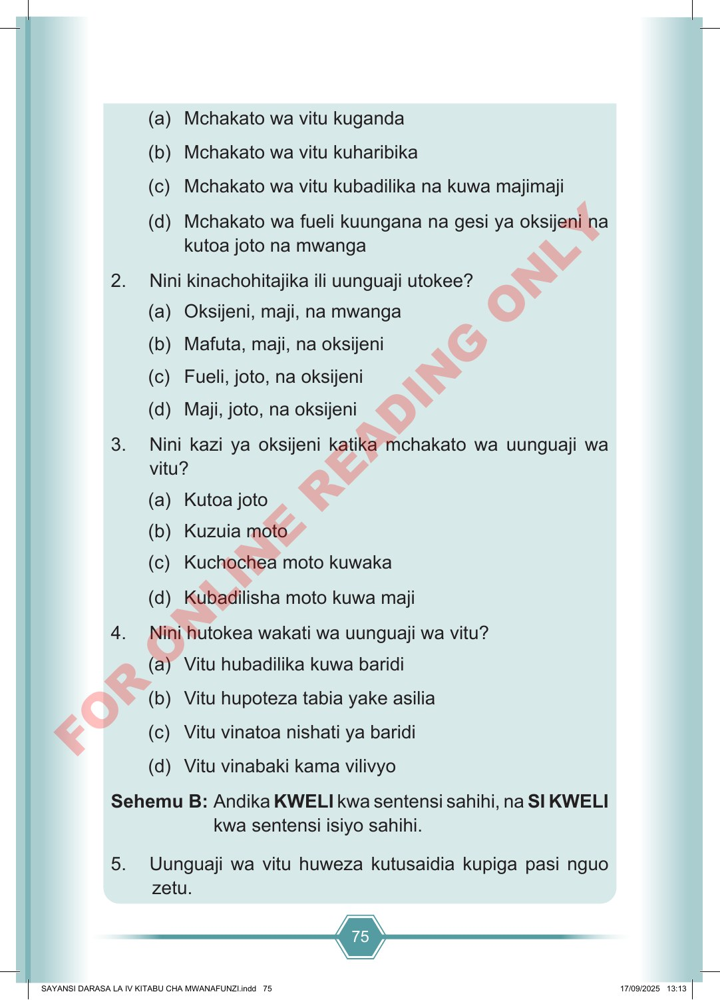

75 (a) Mchakato wa vitu kuganda (b) Mchakato wa vitu kuharibika (c) Mchakato wa vitu kubadilika na kuwa majimaji (d) Mchakato wa fueli kuungana na gesi ya oksijeni na kutoa joto na mwanga 2. Nini kinachohitajika ili uunguaji utokee? (a) Oksijeni, maji, na mwanga (b) Mafuta, maji, na oksijeni (c) Fueli, joto, na oksijeni (d) Maji, joto, na oksijeni 3. Nini kazi ya oksijeni katika mchakato wa uunguaji wa vitu? (a) Kutoa joto (b) Kuzuia moto (c) Kuchochea moto kuwaka (d) Kubadilisha moto kuwa maji 4. Nini hutokea wakati wa uunguaji wa vitu? (a) Vitu hubadilika kuwa baridi (b) Vitu hupoteza tabia yake asilia (c) Vitu vinatoa nishati ya baridi (d) Vitu vinabaki kama vilivyo Sehemu B: Andika KWELI kwa sentensi sahihi, na SI KWELI kwa sentensi isiyo sahihi. 5. Uunguaji wa vitu huweza kutusaidia kupiga pasi nguo zetu. SAYANSI DARASA LA IV KITABU CHA MWANAFUNZI.indd 75 SAYANSI DARASA LA IV KITABU CHA MWANAFUNZI.indd 75 17/09/2025 13:13 17/09/2025 13:13 F O R O N L I N E R E A D I N G O N L Y